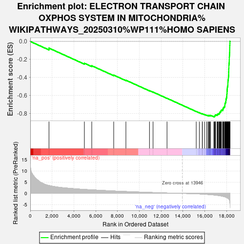
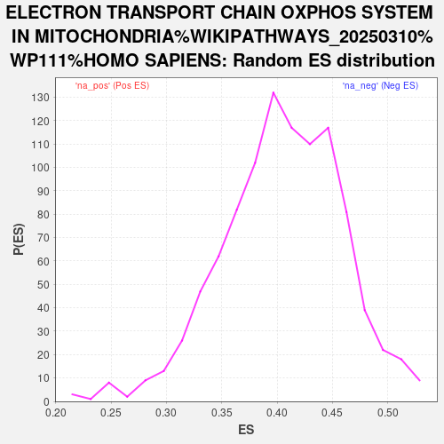

| | | Dataset | ranked_genes |
| Phenotype | NoPhenotypeAvailable |
| Upregulated in class | na_neg |
| GeneSet | ELECTRON TRANSPORT CHAIN OXPHOS SYSTEM IN MITOCHONDRIA%WIKIPATHWAYS_20250310%WP111%HOMO SAPIENS |
| Enrichment Score (ES) | -0.8363762 |
| Normalized Enrichment Score (NES) | NaN |
| Nominal p-value | NaN |
| FDR q-value | 1.0 |
| FWER p-Value | 0.0 |
Table: GSEA Results Summary

Fig 1: Enrichment plot: ELECTRON TRANSPORT CHAIN OXPHOS SYSTEM IN MITOCHONDRIA%WIKIPATHWAYS_20250310%WP111%HOMO SAPIENS
Profile of the Running ES Score & Positions of GeneSet Members on the Rank Ordered List
| SYMBOL | RANK IN GENE LIST | RANK METRIC SCORE | RUNNING ES | CORE ENRICHMENT | | 1 | UCP2 | 1717 | 3.538 | -0.0741 | No |
| 2 | UCP3 | 4964 | 1.797 | -0.2419 | No |
| 3 | SCO1 | 5641 | 1.604 | -0.2699 | No |
| 4 | SLC25A14 | 7654 | 1.096 | -0.3740 | No |
| 5 | COX6A2 | 8772 | 0.855 | -0.4305 | No |
| 6 | COX11 | 10935 | 0.449 | -0.5465 | No |
| 7 | COX15 | 11263 | 0.393 | -0.5622 | No |
| 8 | SLC25A27 | 12543 | 0.186 | -0.6313 | No |
| 9 | NDUFS1 | 15223 | -0.196 | -0.7772 | No |
| 10 | ND4L | 15509 | -0.252 | -0.7914 | No |
| 11 | ND5 | 15776 | -0.323 | -0.8042 | No |
| 12 | NDUFV3 | 15787 | -0.326 | -0.8029 | No |
| 13 | NDUFA12 | 15988 | -0.382 | -0.8117 | No |
| 14 | COX7A2L | 16173 | -0.447 | -0.8192 | No |
| 15 | DMAC2L | 16292 | -0.487 | -0.8229 | No |
| 16 | NDUFS5 | 16386 | -0.520 | -0.8251 | No |
| 17 | SDHC | 16387 | -0.521 | -0.8221 | No |
| 18 | NDUFB5 | 16450 | -0.541 | -0.8224 | No |
| 19 | NDUFA5 | 16524 | -0.567 | -0.8232 | No |
| 20 | SDHD | 16538 | -0.572 | -0.8207 | No |
| 21 | ATP5ME | 16824 | -0.700 | -0.8323 | Yes |
| 22 | ATP5IF1 | 16899 | -0.745 | -0.8321 | Yes |
| 23 | NDUFB4 | 16919 | -0.756 | -0.8289 | Yes |
| 24 | NDUFS4 | 16940 | -0.767 | -0.8256 | Yes |
| 25 | NDUFB3 | 16963 | -0.779 | -0.8224 | Yes |
| 26 | ATP5F1E | 16985 | -0.789 | -0.8190 | Yes |
| 27 | NDUFAB1 | 16986 | -0.789 | -0.8146 | Yes |
| 28 | COX17 | 17131 | -0.878 | -0.8175 | Yes |
| 29 | COX1 | 17149 | -0.886 | -0.8134 | Yes |
| 30 | COX5B | 17186 | -0.908 | -0.8102 | Yes |
| 31 | NDUFV2 | 17205 | -0.920 | -0.8059 | Yes |
| 32 | ATP8 | 17284 | -0.961 | -0.8047 | Yes |
| 33 | ATP5MF | 17303 | -0.975 | -0.8002 | Yes |
| 34 | ATP5PB | 17362 | -1.012 | -0.7976 | Yes |
| 35 | ND6 | 17375 | -1.025 | -0.7924 | Yes |
| 36 | UQCRB | 17378 | -1.028 | -0.7867 | Yes |
| 37 | NDUFC2 | 17425 | -1.081 | -0.7831 | Yes |
| 38 | COX5A | 17470 | -1.112 | -0.7791 | Yes |
| 39 | ATP5F1C | 17480 | -1.126 | -0.7732 | Yes |
| 40 | NDUFC1 | 17504 | -1.141 | -0.7680 | Yes |
| 41 | ND4 | 17533 | -1.163 | -0.7629 | Yes |
| 42 | NDUFA2 | 17650 | -1.290 | -0.7619 | Yes |
| 43 | NDUFA6 | 17652 | -1.291 | -0.7546 | Yes |
| 44 | NDUFB1 | 17672 | -1.316 | -0.7482 | Yes |
| 45 | SURF1 | 17707 | -1.358 | -0.7423 | Yes |
| 46 | ATP5PD | 17719 | -1.367 | -0.7352 | Yes |
| 47 | UQCRQ | 17755 | -1.420 | -0.7290 | Yes |
| 48 | NDUFA9 | 17820 | -1.503 | -0.7240 | Yes |
| 49 | ATP5MC2 | 17851 | -1.548 | -0.7168 | Yes |
| 50 | ATP5MG | 17852 | -1.548 | -0.7080 | Yes |
| 51 | NDUFA10 | 17856 | -1.550 | -0.6994 | Yes |
| 52 | CYTB | 17857 | -1.552 | -0.6905 | Yes |
| 53 | COX7A2 | 17886 | -1.610 | -0.6829 | Yes |
| 54 | NDUFB2 | 17916 | -1.658 | -0.6751 | Yes |
| 55 | ATP5F1D | 17939 | -1.701 | -0.6666 | Yes |
| 56 | COX7C | 17945 | -1.714 | -0.6571 | Yes |
| 57 | SDHB | 17946 | -1.718 | -0.6473 | Yes |
| 58 | ATP5PF | 17971 | -1.759 | -0.6387 | Yes |
| 59 | NDUFA4 | 17982 | -1.789 | -0.6290 | Yes |
| 60 | NDUFB6 | 18014 | -1.860 | -0.6201 | Yes |
| 61 | UQCRH | 18026 | -1.881 | -0.6100 | Yes |
| 62 | COX3 | 18030 | -1.884 | -0.5995 | Yes |
| 63 | UQCR11 | 18032 | -1.886 | -0.5888 | Yes |
| 64 | UQCR10 | 18040 | -1.904 | -0.5784 | Yes |
| 65 | NDUFA1 | 18047 | -1.917 | -0.5678 | Yes |
| 66 | COX6C | 18048 | -1.917 | -0.5569 | Yes |
| 67 | ATP6 | 18057 | -1.935 | -0.5463 | Yes |
| 68 | UQCRFS1 | 18063 | -1.966 | -0.5354 | Yes |
| 69 | NDUFS6 | 18072 | -1.995 | -0.5245 | Yes |
| 70 | NDUFB10 | 18079 | -2.012 | -0.5134 | Yes |
| 71 | COX8A | 18085 | -2.024 | -0.5021 | Yes |
| 72 | COX7B | 18119 | -2.139 | -0.4918 | Yes |
| 73 | NDUFA3 | 18124 | -2.154 | -0.4798 | Yes |
| 74 | NDUFS2 | 18127 | -2.167 | -0.4675 | Yes |
| 75 | NDUFS7 | 18129 | -2.184 | -0.4552 | Yes |
| 76 | ND2 | 18134 | -2.199 | -0.4429 | Yes |
| 77 | ND1 | 18138 | -2.218 | -0.4304 | Yes |
| 78 | UQCRC2 | 18165 | -2.297 | -0.4188 | Yes |
| 79 | NDUFA11 | 18171 | -2.318 | -0.4059 | Yes |
| 80 | SLC25A6 | 18177 | -2.347 | -0.3928 | Yes |
| 81 | ND3 | 18189 | -2.384 | -0.3798 | Yes |
| 82 | ATP5PO | 18197 | -2.422 | -0.3664 | Yes |
| 83 | SLC25A4 | 18199 | -2.443 | -0.3526 | Yes |
| 84 | SDHA | 18200 | -2.443 | -0.3387 | Yes |
| 85 | NDUFB8 | 18206 | -2.462 | -0.3250 | Yes |
| 86 | COX2 | 18207 | -2.488 | -0.3108 | Yes |
| 87 | COX7A1 | 18212 | -2.526 | -0.2967 | Yes |
| 88 | ATP5F1A | 18218 | -2.581 | -0.2822 | Yes |
| 89 | ATP5MC3 | 18219 | -2.604 | -0.2674 | Yes |
| 90 | NDUFA13 | 18225 | -2.638 | -0.2527 | Yes |
| 91 | NDUFA7 | 18238 | -2.715 | -0.2379 | Yes |
| 92 | COX4I1 | 18252 | -2.827 | -0.2225 | Yes |
| 93 | ATP5F1B | 18255 | -2.874 | -0.2063 | Yes |
| 94 | NDUFS8 | 18258 | -2.893 | -0.1900 | Yes |
| 95 | NDUFS3 | 18259 | -2.900 | -0.1735 | Yes |
| 96 | NDUFB9 | 18268 | -2.957 | -0.1571 | Yes |
| 97 | NDUFA8 | 18277 | -3.066 | -0.1401 | Yes |
| 98 | COX6B1 | 18286 | -3.216 | -0.1222 | Yes |
| 99 | SLC25A5 | 18291 | -3.310 | -0.1036 | Yes |
| 100 | COX6A1 | 18293 | -3.432 | -0.0841 | Yes |
| 101 | NDUFV1 | 18296 | -3.500 | -0.0643 | Yes |
| 102 | NDUFB7 | 18299 | -3.562 | -0.0442 | Yes |
| 103 | UQCRC1 | 18309 | -3.951 | -0.0222 | Yes |
| 104 | ATP5MC1 | 18313 | -4.094 | 0.0009 | Yes |
Table: GSEA details [plain text format]

Fig 2: ELECTRON TRANSPORT CHAIN OXPHOS SYSTEM IN MITOCHONDRIA%WIKIPATHWAYS_20250310%WP111%HOMO SAPIENS: Random ES distribution
Gene set null distribution of ES for ELECTRON TRANSPORT CHAIN OXPHOS SYSTEM IN MITOCHONDRIA%WIKIPATHWAYS_20250310%WP111%HOMO SAPIENS